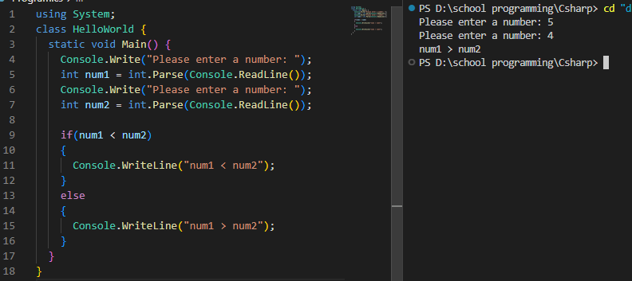

תנאים
סוד
.if() אם נרצה לבצע פעולה כלשהי רק לאחר אימות תנאי מסוים, נשתמש בפעולה

.else אם התנאי לא נכון, מה נעשה? נשתמש בפעולה
.else if() אם התנאי לא נכון, ואנחנו רוצים לבדוק תנאי אחר, מה נעשה? נשתמש בפעולה

:התנאים הלוגיים הקיימים